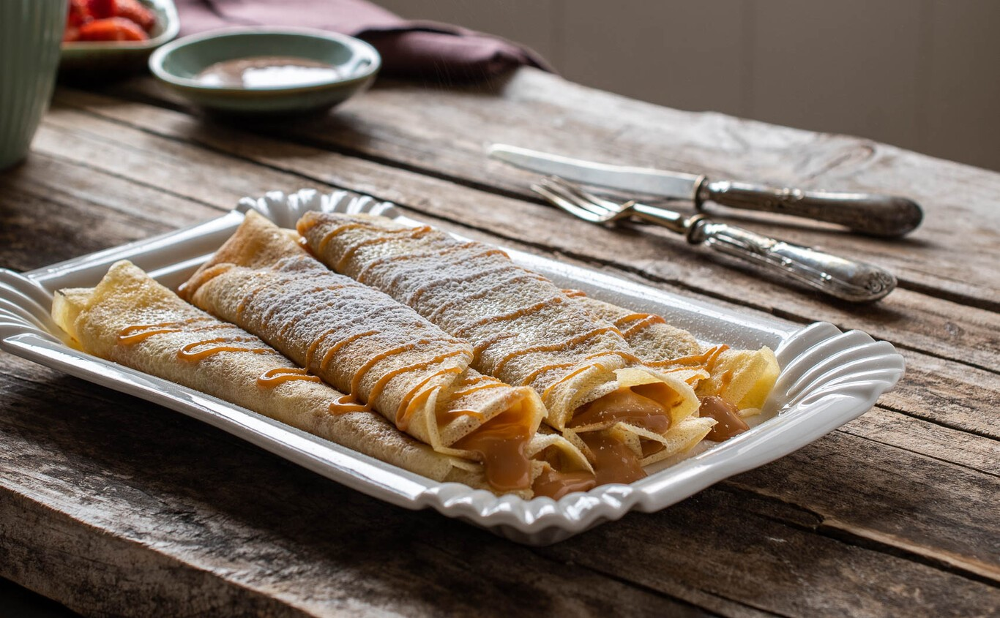
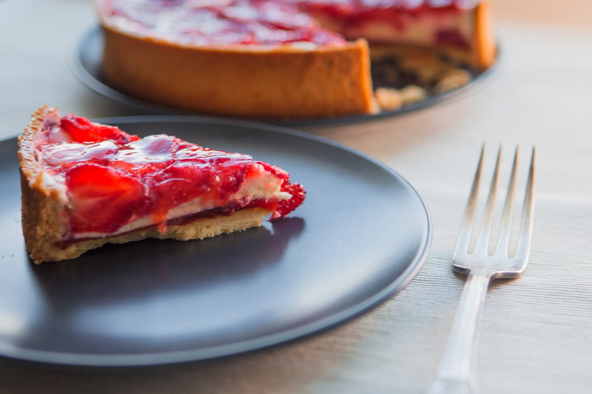
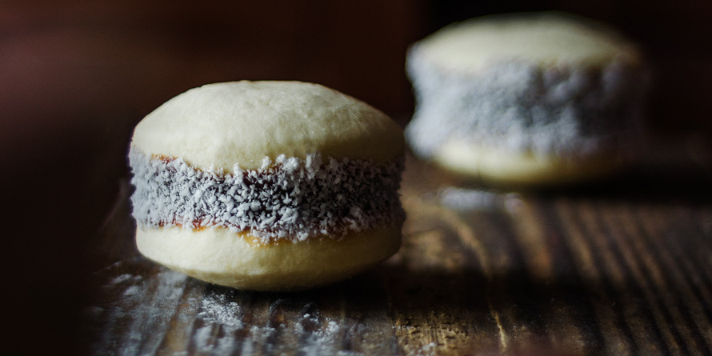
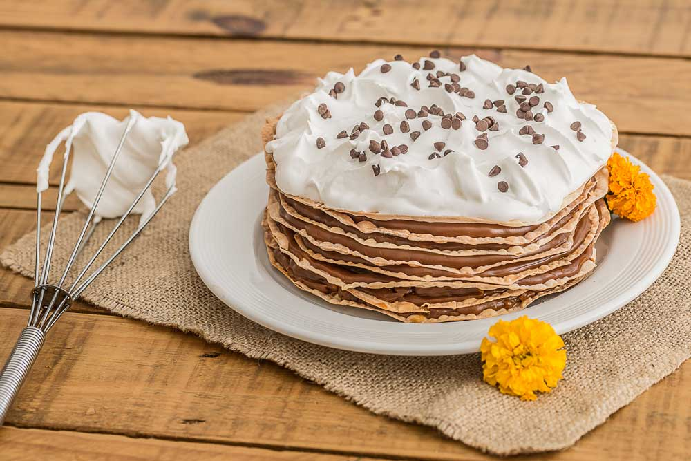

El brownie es un bizcocho de chocolate con nueces fruto de un accidente culinario, un error de un cocinero que olvidó poner levadura al bizcocho de chocolate que estaba elaborando, pero ¿cómo no iba a estar bueno con estos ingredientes como base?, así pues, este bizcocho de crujiente por fuera y tierno y jugoso en su interior, se bautizó con el nombre de brownie (marroncito), ese es su origen, muchas gracias al cocinero que se equivocó, se las merece. Volviendo al tema, el origen del brownie se ubica en Estados Unidos allá por el año 1897. Se conoce también como brownie de chocolate o brownie de Boston y actualmente cuenta con una inmensa variedad de recetas que varían en proporciones y en incorporación de ingrediente.
Aunque actualmente los asociemos a la cultura norteamericana o anglosajona en general, el origen de los pancakes es muy anterior a esas sociedades y tiene raíces religiosas. Según muchos libros de historia, los antecesores de los pancakes se remontan al siglo IV o V d.C., cuando durante la Cuaresma no sólo estaba prohibido por la Iglesia el consumo de carne sino también de manteca, huevos, queso o leche. El hambre aguza el ingenio, de modo que quienes observaban el ayuno empezaron a hacer una pasta a base de harina de trigo y agua que se cocinaba extendiéndola en capas muy finas sobre piedras muy calientes. Algunos siglos más tarde las autoridades eclesiásticas permitieron en la dieta de Cuaresma la leche, huevos y manteca, que se añadieron a la pasta de harina dando origen a lo que hoy en día son los pancakes.
La historia de la chocotorta nació de la creatividad de Marité Mabragaña, que se desempeñaba como publicitaria en la agencia Ricardo De Luca. En ese entonces, se trataba de uno de los hubs más importante del país."En aquella época se hacían tortas con vainillas y a mí me gustaba mojar las chocolinas en oporto. También sabía que el dulce de leche con queso crema es lo más rico que hay", contó en diálogo con Clarín. En 1982 llevo a la agencia una torta en la que había apilado estos ingredientes y todo el mundo quedó encantado. Esto activó una nueva idea. Al día siguiente preparó dos tortas idénticas y se las llevó a la empresa Bagley, dueña de las Chocolinas; y Mendizábal, fabricante del queso crema Mendicrim. Se le ocurrió promocionar ambos productos a través de su dulce creación.
Un clásico de la cocina francesa: Tarta Fraisier: uno de los pasteles que siempre está presente en la carta de las mejores pastelerías y que forma parte de los grandes clásicos de la repostería francesa. Ahora que estamos en plena temporada fresas y las podemos encontrar con facilidad en nuestros mercados, es la mejor época para disfrutar plenamente de esta exquisita tarta. Su elaboración tiene varios pasos, pero cada uno de ellos en sí no tienen ningún tipo de dificultad. El origen de esta tarta es incierto, algunos la sitúan en el 1860, época en la que también fue concebida otra de las grandes tartas de la repostería francesa, la tarta L’Opera, aunque a diferencia de esta se desconoce su autor y sólo se sabe que llegó para situarse como una de las grandes tartas de la repostería del país vecino. El origen de su nombre deriva de la palabra francesa fraise (fresa en francés).
No, nos hemos equivocado, no se llama flora. Este delicioso pastel se llama “pasta frola” y hay que preguntarle a los italianos de dónde viene su nombre. Porque aunque tal vez lo conozcas por algún amigo argentino que te haya invitado a su típica merienda de hierba mate con pasta frola, ellos, este delicioso pastel, lo recibieron de los miles de inmigrantes italianos que llegaron a Argentina allá por el siglo XIX. Te contamos la interesante historia de la pasta frola, dice que unas religiosas la inventaron en el convento de San Gregorio de Armeno en Nápoles. La llamaban “pastiera napoletana” y la rellenaban de una crema compuesta por leche, mantequilla, ricotta, huevos y ralladura de naranja entre otros ingredientes. Su fama traspasó los muros y se convirtió en un dulce muy apreciado en toda Italia.
El origen de los alfajores de maicena es árabe. El prefijo “al” sería un signo que indicaría la naturaleza árabe de la palabra (“al-hasú”, en castellano, ”el relleno”) y, en consecuencia, del postre en cuestión. Con los alfajores encontramos de nuevo otro dulce originario del mundo árabe, como los turrones o el almíbar. Los árabes lo trajeron a la península en la época de la invasión musulmana. En aquel tiempo los alfajores de maicena eran una golosina tradicional de la gastronomía del Al-Ándalus y fue llevado a América en el periodo colonial, expandiéndose por toda Sudamérica y, especialmente, por Argentina, lugar donde han resultado ser muy populares. De hecho, la tradición de alfajores en Argentina se remonta a 130 años atrás, siendo el país donde más variedades de este postre podemos encontrar.
Fue en España donde comenzó la historia de este plato de repostería. Fue concebido allá por el año 1897 y su versión original consiste en un bizcocho bien humedecido en algún jarabe dulce, luego se enrolla y luego se tuesta su corona. Para quien desarrolló este plato, le pareció que asemejaba a la silueta del Papa Pío IX, de allí el nombre. Es muy probable que el pionono haya llegado a la Argentina de la mano de las olas inmigratorias de principio del siglo XX. Pero como ocurrió con una importante parte de la cocina argentina, esta receta española comenzó su fusión con la enorme mixtura de culturas que el mundo le aportó a este país. El pionono argentino surge transformando el bizcocho en un bizcochuelo muy delgado y flexible, de sabor dulce.
El alfajor Rogel es un bocadito tradicional de nuestro país, relleno de dulce de leche y cubierto con merengue. Luego, la pastelería creó la torta Rogel, ampliando su tamaño y convirtiéndolo en uno de los platos fuertes de cualquier mesa dulce. Es de origen argentino y con una historia que lleva ya más de cuarenta años de la mano de María del Rosario y Ricardo Balbiani. Fueron ellos quienes no solo comenzaron a preparar este tipo de alfajor tomando como base una receta europea y también el que ofrecía un local de venta al público en el barrio de Belgrano. El clásico Rogel es un alfajor de cuatro capas que lleva dulce de leche entre cada una de ellas y por último se cubre con merengue italiano.
En el año 1660, el italiano Procopio inventó una máquina que homogeneizaba las frutas, el azúcar y el hielo, con lo que se obtenía una verdadera crema helada, similar a la que hoy conocemos. El origen de los helados es muy antiguo. Algunos sostienen que los antiguos romanos son los inventores del "sorbete", para lo cual utilizaban nieve, frutas y miel. Cuentan que el emperador Nerón hacia traer nieve de los Alpes para que le preparasen esta bebida helada. En nuestro país, hasta mediados del siglo 19, el hielo llegaba desde Inglaterra o los Estados Unidos en barras envueltas en aserrín. Los primeros en servir refrescos 'helados' fueron el "Café de París", el "Café de las Armas" y el "Café de los Catalanes". Gradualmente aparecieron las heladerías.